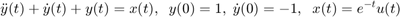
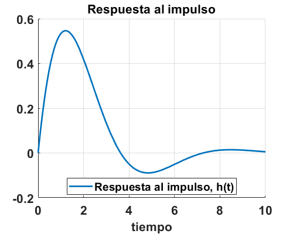
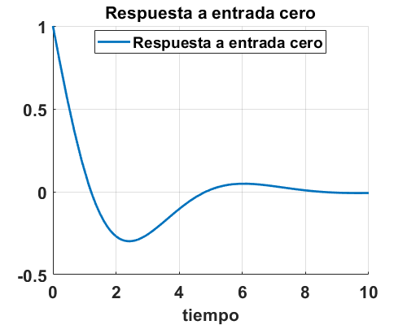

Práctica 6: Sistemas diferenciales
Autores:
- Argaez Herrera Antonia Margarita
- Leguizamo Lara Daniela Denisse
- Rojas Solis Juan Carlos
Grupo: 2TV1
Profesor:
Dr. Rafael Martínez Martínez
Contents
Desarrollo
Para sistemas diferenciales realiza un programa con las siguientes características
- Muestra la función de transferencia del sistema
- Muestra la respuesta al impulso (simbólico, gráfica)
- Muestra la respuesta a entrada cero (simbólico, gráfica)
- Muestra la respuesta a estado cero (simbólico, gráfica)
- Muestra la respuesta total (simbólico, gráfica)
- La respuesta total al escalón con condiciones iniciales 0 (simbólico, gráfica)
- Usando subplot, despliega una figura con 5 gráficas
Observa que los entregables pueden resolverse (solo la función de transferencia) con llamadas a las funciones presentadas en esta publicación
Nota: Ejecuta los ejemplos descritos dentro de los comentarios de cada código para que observes el uso de estos
Se entrega una publicación en html de tu desarrollo y se probará para un problema específico.
Ejercicio 1
Para esta practica vamos a ocupar la siguiente ecuación diferencial, con su respectiva entrada y condiciones iniciales.

NOTA: Para esta función, los coeficientes deben de ponerse de mayor a menor, tanto las salidas como las entradas
mitrans([1 1 1],[1])
H(S) =
ans =
1
-----------
s^2 + s + 1
Continuous-time transfer function.
Ejercicio 2
fun2([1 1 1],[1],10)
APLICAMOS TRANSFORMADA DE LAPLACE
2
Y(s) + s Y(s) + s Y(s)
=
X(s)
DESPEJAMOS H(s)
H(s)=
1
----------
2
s + s + 1
DESARROLLAMOS LAS FRACCIONES PARCIALES DE H(s)
H(s)=
1
----------
2
s + s + 1
Aplicamos transformada inversa, asi la solución es
h(t)=
/ t \ / sqrt(3) t \
sqrt(3) exp| - - | sin| --------- | 2
\ 2 / \ 2 /
-------------------------------------
3
 Ejercicio 3
fun3([1 1 1],[1],[1,-1],10)
APLICAMOS TRANSFORMADA DE LAPLACE y subtituimos condiciones iniciales
2
Y(s) - s + s Y(s) + s Y(s)
=
0
DESPEJAMOS Y(s)
Y(s)=
s
----------
2
s + s + 1
DESARROLLAMOS LAS FRACCIONES PARCIALES DE Y(s)
Y(s)=
s
----------
2
s + s + 1
Aplicamos transformada inversa, asi la solución es
y(t)=
/ / sqrt(3) t \ \
| sqrt(3) sin| --------- | |
/ t \ | / sqrt(3) t \ \ 2 / |
exp| - - | | cos| --------- | - ------------------------ |
\ 2 / \ \ 2 / 3 /
 Ejercicio 4
fun4([1 1 1],[1],exp(-t),10)
APLICAMOS TRANSFORMADA DE LAPLACE
2
Y(s) + s Y(s) + s Y(s)
=
X(s)
SUBSTITUIMOS LA TRANSFORMADA DE LA ENTRADA
2
Y(s) + s Y(s) + s Y(s)
=
1
-----
s + 1
DESPEJAMOS Y(s)
Y(s)=
1
--------------------
2
(s + 1) (s + s + 1)
DESARROLLAMOS LAS FRACCIONES PARCIALES DE Y(s)
Y(s)=
1 s
----- - ----------
s + 1 2
s + s + 1
Aplicamos transformada inversa, asi la solución es
y(t)=
/ / sqrt(3) t \ \
| sqrt(3) sin| --------- | |
/ t \ | / sqrt(3) t \ \ 2 / |
exp(-t) - exp| - - | | cos| --------- | - ------------------------ |
\ 2 / \ \ 2 / 3 /